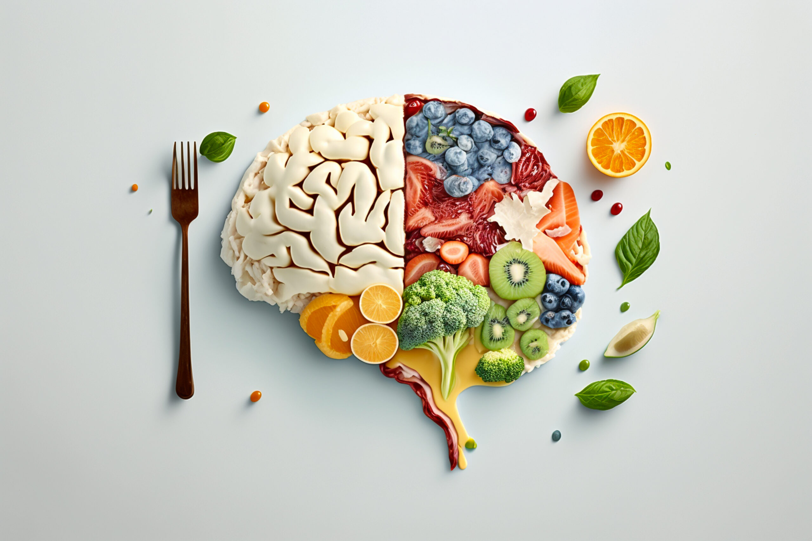
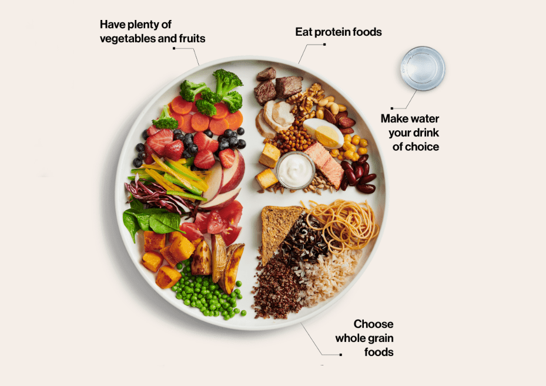

Nutrition and Healthy Eating
Introduction

Food is one of the most powerful influences on our health. SDG 3 — Good Health and Well-being — recognises nutrition as a cornerstone of human health. Poor diet is now the leading risk factor for disease globally, linked to heart disease, type 2 diabetes, certain cancers, and poor mental health.
For university students managing busy schedules and limited budgets, healthy eating can feel difficult. This page explores what good nutrition looks like, the barriers people face, and practical actions we can all take to eat better and support SDG 3.
Why Nutrition Matters for SDG 3

What we eat shapes our physical and mental health every single day. Poor nutrition is not just a personal health issue — it is a public health crisis that disproportionately affects low-income communities and developing nations.
- 11 million deaths per year are linked to poor diet globally (WHO, 2024)
- 1 in 3 adults worldwide are overweight or obese
- 45% of child deaths under 5 are linked to undernutrition
- A healthy diet is associated with a 30% lower risk of depression
Poor nutrition is also an equality issue — people in lower-income communities often have less access to affordable fresh food. Addressing this under SDG 3 requires both individual action and wider societal change.
The Balanced Plate

The NHS Eatwell Guide recommends drawing from all food groups every day. Here is a simple breakdown:
- Fruit and vegetables — at least 5 portions a day; fresh, frozen, or tinned all count
- Starchy carbohydrates — choose wholegrain options like brown rice, oats, and wholemeal bread
- Proteins — beans, lentils, eggs, fish, or lean meat; beans and lentils are the cheapest and most sustainable
- Dairy or alternatives — lower-fat milk, yoghurt, or fortified plant-based drinks
- Hydration — aim for 6 to 8 glasses of water per day; avoid sugary drinks
Barriers to Healthy Eating
Healthy eating is not always easy, especially for students. The most common barriers include:
- Cost: Fresh produce can seem expensive, but staples like lentils, oats, eggs, and frozen vegetables are nutritious and affordable.
- Time: Busy schedules make cooking from scratch hard. Batch cooking at the weekend is a practical solution.
- Cooking skills: Many students have cooked very little before university and rely on takeaways or ready meals as a result.
- Food environment: Campuses and high streets are often dominated by fast food, making healthy choices harder by default.
- Mental health: Stress and anxiety are linked to disordered eating patterns, including comfort eating and food restriction.
Actions You Can Take for SDG 3
1. Plan your meals each week
A simple weekly meal plan reduces food waste, saves money, and makes it much easier to eat balanced meals consistently throughout the week.
2. Try one plant-based meal per day
Swapping one meal a day to a plant-based option — such as a lentil dahl or bean stir-fry — lowers saturated fat intake, increases fibre, and reduces your carbon footprint at the same time.
3. Share cooking skills with others
Organise a cooking session with flatmates or volunteer at a community kitchen. Teaching someone to cook has a lasting positive impact on their health habits.
4. Advocate for better food on campus
Engage with your students' union to push for affordable healthy food options, food banks, and free breakfast schemes on campus.
Further Resources
- NHS Eatwell Guide: nhs.uk/live-well/eat-well
- WHO — Healthy Diet Factsheet: who.int — healthy diet
- British Nutrition Foundation: nutrition.org.uk
Return to the Home Page to explore the other SDG 3 topics our team has covered.